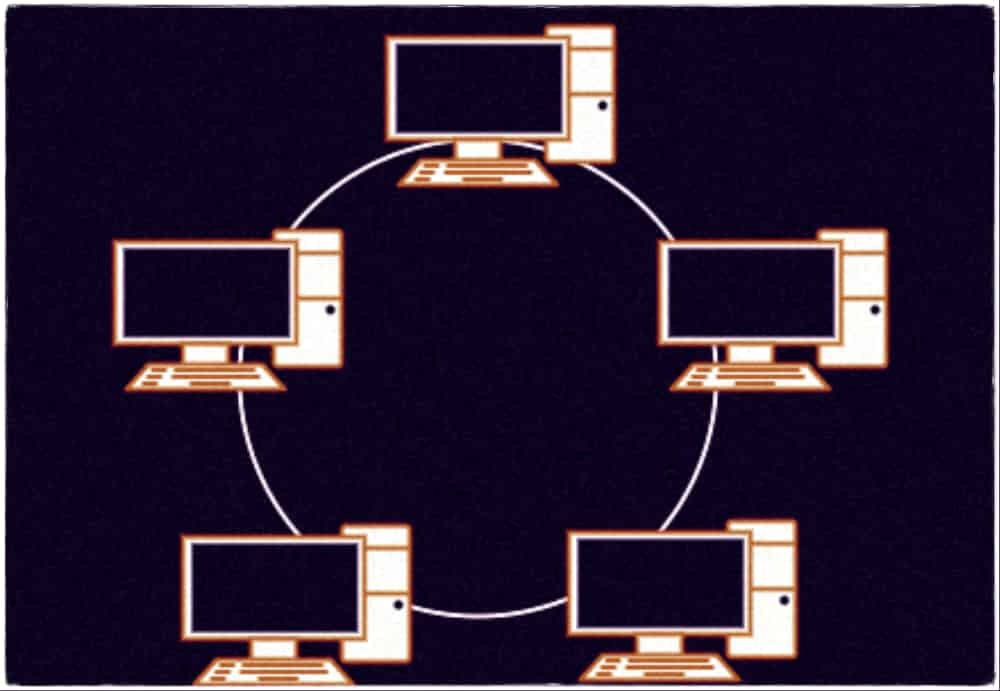
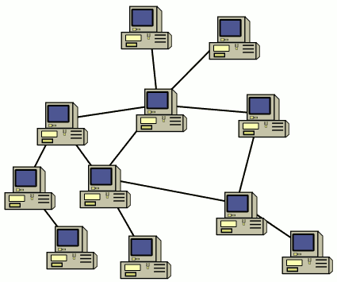
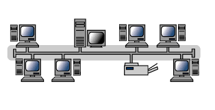

Estrella

Ventajas: Fácil mantenimiento
Desventajas: Depende del switch central
Anillo
Ventajas: Sin colisiones
Desventajas: Si un nodo falla, se cae la red
Malla
Ventajas: Redundancia
Desventajas: Costo alto de cables
Bus
Ventajas: Barata
Desventajas: Si el cable central falla, toda la red se cae